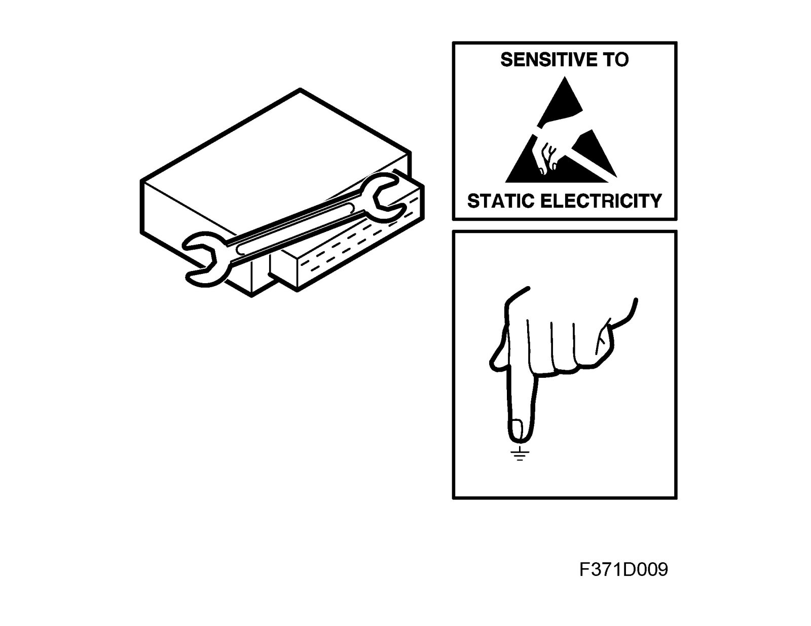

Procedures Before Dismantling the Control Module
Procedures before dismantling the control module
The control module is sensitive to electrostatic discharges. In order to prevent damage to internal components in control modules, they must be changed very carefully in the following manner:
^ Never touch the pins on a control module with your hands or clothes.
^ Ground yourself by touching the car body/engine. Unplug the connector on the car's control module.
^ Ground yourself by touching the car body/engine. Plug-in the connector on the car's control module.
When the control module is to be replaced
^ Place the old control module in the return packaging without touching its pins.
^ Keep the new control module in its packaging as long as possible.
Before removing a control module, Tech 2 must be used to separate the control module from the car. From the "All" menu, select the control module under "And/Remove". Then select "Remove" and follow the instructions. The ignition key must be in the ON position. TIS 2000 may be required. Once the control module has been separated from the car, turned the ignition key to the OFF position. The control module can then be removed. Carry out the "Remove" action with Tech2 even if the control module cannot be contacted or is completely missing because data in other control modules must be changed.
The action involves the following:
Security codes will be reset, bus lists updated, data in other control modules updated and data that may have to be written into a new control module read and displayed.